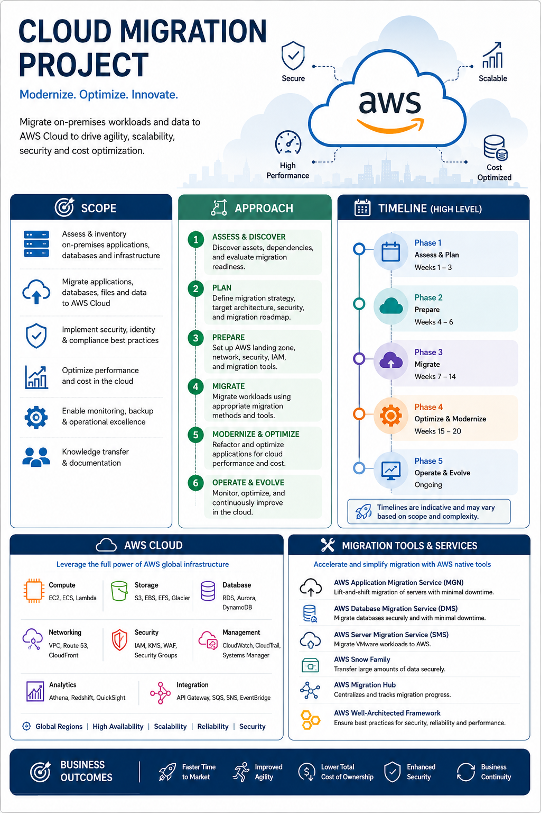

Case Study 06
AWS Cloud Migration – Banking
☁️ Domain: Banking / Financial Services
💼 Role: Cloud Migration Program / Project Manager
☁️ Cloud Platform: Amazon Web Services (AWS)
🔄 Transformation: On-Premises to Cloud Migration
🎯 Focus: Migration, Modernization, Security, Cost & Operational Excellence
Business Challenge
The banking organization was operating a portfolio of
on-premises applications, databases, infrastructure and
enterprise workloads. The environment required modernization
to improve agility, scalability, resilience, security and
operational efficiency.
The cloud migration program focused on assessing the existing
estate, defining the target AWS architecture, establishing
a secure cloud foundation, migrating workloads and data,
modernizing selected applications and transitioning the
environment into optimized cloud operations.
Program Scope
-
Assess and inventory on-premises applications, databases,
infrastructure and dependencies.
-
Assess application and workload migration readiness.
-
Define migration waves, priorities and dependencies.
-
Establish AWS landing-zone, network, identity and security
foundations.
-
Migrate applications, databases, files and enterprise data
to AWS Cloud.
-
Implement security, identity, compliance and governance
controls.
-
Modernize selected applications for cloud-native operation.
-
Establish monitoring, backup, disaster recovery and
operational processes.
-
Optimize cloud performance and cost.
-
Execute knowledge transfer and transition to BAU operations.
Cloud Migration Objectives
-
Modernize the banking technology landscape.
-
Improve scalability and infrastructure agility.
-
Strengthen security and compliance capabilities.
-
Improve application and infrastructure resilience.
-
Reduce infrastructure management complexity.
-
Enable faster delivery of digital banking capabilities.
-
Establish cloud-based monitoring and operational excellence.
-
Optimize total cost of ownership through right-sizing and
cloud cost governance.
Cloud Migration Architecture
The migration architecture establishes a secure AWS foundation
for hosting banking workloads while supporting application
migration, database migration, data transfer, integration,
observability and continuous optimization.

AWS Cloud Migration Program – Banking
AWS Cloud Architecture
-
Compute:
Amazon EC2, ECS and Lambda for application workloads and
cloud-native processing.
-
Storage:
Amazon S3, EBS, EFS and Glacier for application data,
files, backups and archival.
-
Database:
Amazon RDS, Aurora and DynamoDB for relational and
NoSQL workloads.
-
Networking:
Amazon VPC, Route 53 and CloudFront for secure networking,
DNS and content delivery.
-
Security:
IAM, KMS, WAF and security controls supporting identity,
encryption and application protection.
-
Management & Monitoring:
CloudWatch, CloudTrail and Systems Manager for operational
visibility, auditing and administration.
-
Analytics:
Athena, Redshift and QuickSight for cloud analytics and
reporting use cases.
-
Integration:
API Gateway, SQS, SNS and EventBridge for application,
event and enterprise integration.
Cloud Migration Approach
01 — Assess & Discover
-
Inventory applications, databases, infrastructure and
business services.
-
Identify technical, application and business dependencies.
-
Assess workload criticality, migration readiness and
complexity.
-
Identify security, compliance and data requirements.
-
Establish application migration candidates and priorities.
02 — Plan
-
Define migration strategy and target AWS architecture.
-
Develop migration roadmap and wave plan.
-
Define application migration patterns.
-
Establish dependency and sequencing strategy.
-
Define resource, budget, risk and schedule requirements.
03 — Prepare
-
Establish AWS landing-zone foundations.
-
Configure network, identity and access controls.
-
Establish security, logging and monitoring capabilities.
-
Configure migration tooling and environments.
-
Prepare operational support and governance processes.
04 — Migrate
-
Execute migration waves based on approved priorities.
-
Migrate application workloads and databases.
-
Transfer files and enterprise data securely.
-
Validate application integrations and dependencies.
-
Conduct business validation and production readiness
assessments.
05 — Modernize & Optimize
-
Identify workloads suitable for modernization.
-
Refactor selected applications for cloud-native operation.
-
Improve scalability, resilience and performance.
-
Implement cloud cost optimization and right-sizing.
-
Improve observability and operational automation.
06 — Operate & Evolve
-
Transition migrated workloads into BAU operations.
-
Monitor availability, performance and capacity.
-
Manage incidents, changes and operational risks.
-
Continuously optimize cloud infrastructure and workloads.
-
Maintain the cloud modernization roadmap.
Migration Tools & Services
-
AWS Application Migration Service (MGN):
Lift-and-shift migration of servers and application
workloads.
-
AWS Database Migration Service (DMS):
Database migration and replication with minimized
downtime.
-
AWS Server Migration Service (SMS):
Migration support for eligible server and virtualized
workloads.
-
AWS Snow Family:
Secure transfer of large datasets where appropriate.
-
AWS Migration Hub:
Centralized visibility and tracking of migration progress.
-
AWS Well-Architected Framework:
Architecture review across security, reliability,
performance, cost and operational excellence.
Migration Governance
-
Migration roadmap and wave governance.
-
Architecture and security review checkpoints.
-
Application dependency and readiness governance.
-
RAID and cross-team dependency management.
-
Change, release and production-readiness governance.
-
Risk, compliance and audit coordination.
-
Financial tracking and cloud cost governance.
-
Executive stakeholder reporting and steering governance.
Program Management Focus
-
End-to-end cloud migration roadmap and program governance.
-
Portfolio-level migration planning and prioritization.
-
Cross-functional coordination across application,
infrastructure, cloud, security, data and business teams.
-
Migration wave planning and dependency management.
-
Vendor and cloud partner coordination.
-
Resource, financial and delivery planning.
-
Risk, issue, assumption and dependency management.
-
Production readiness and Go-Live governance.
-
Business continuity and operational transition.
-
Executive communication and steering committee reporting.
Technology Landscape
-
Amazon Web Services (AWS)
-
Amazon EC2 / ECS / Lambda
-
Amazon S3 / EBS / EFS / Glacier
-
Amazon RDS / Aurora / DynamoDB
-
Amazon VPC / Route 53 / CloudFront
-
AWS IAM / KMS / WAF
-
Amazon CloudWatch / CloudTrail
-
AWS Glue / Athena / Redshift / QuickSight
-
API Gateway / SQS / SNS / EventBridge
-
AWS MGN / DMS / Migration Hub
-
Docker / Kubernetes
-
CI/CD and DevOps
High-Level Migration Timeline
-
Phase 1 – Assess & Plan:
Weeks 1–3
-
Phase 2 – Prepare:
Weeks 4–6
-
Phase 3 – Migrate:
Weeks 7–14
-
Phase 4 – Optimize & Modernize:
Weeks 15–20
-
Phase 5 – Operate & Evolve:
Ongoing
Business Outcomes
Established a secure and scalable AWS cloud foundation
for banking workloads, enabling progressive workload
migration, application modernization, improved agility,
stronger operational visibility and continuous cloud
optimization.
Program Management Takeaway:
Cloud migration is a business transformation program,
not simply an infrastructure move. Successful delivery
requires application discovery, dependency management,
migration-wave planning, security governance, business
continuity, stakeholder alignment, production readiness
and post-migration optimization.